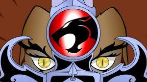

Los felinos cósmicos es una serie animada estadounidense de televisión que fue producida por Rankin/Bass Productions la misma que creó a los Halcones Galácticos, Los Tigres del Mar, esta última fue creada como parte de la serie de libros de historietas. Fue estrenada el 23 de enero de 1985 y está basada en los personajes creados por Theodore Walter «Tobin» Wolf; dirigida por el japonés Katsuhito Akiyama. El escritor fue Leonard Starr. La serie sigue las aventuras de un grupo de felinos humanoides extraterrestres.
Los felinos cósmicos sigue las aventuras del equipo de héroes los ThunderCats, que es un grupo de felinos humanoides extraterrestres, muy avanzados tecnológicamente pero involucran al misticismo y a fuerzas sobrenaturales, llegando a vivir en un planeta azul que ellos llamaron Tercer Planeta. La trama de la serie inicia en Thundera un planeta a punto de explotar, lo que obliga a los ThunderCats, la casta más alta de nobles thunderianos, a huir de su planeta natal, en donde vivían en paz y sin necesidad del uso de ropa ni de armas especiales, en una flota de naves espaciales.
León-O es el líder y el heredero del título de «Señor de los ThunderCats» y está inspirado en el león. También es el portador de la legendaria Espada del Augurio, que es capaz de disparar rayos de energía y permite a León-O ver a través de enormes distancias gracias al poder de «ver más allá de lo evidente»; portador de la «Garra», un guante escudo que lanza desde sus zarpas unas luces que resguñan. Al momento de la explosión de «Thundera» era un niño de doce años de edad pero crece hasta la edad adulta durante el viaje al «Tercer Planeta» porque su cápsula de suspensión no evita su envejecimiento. Aunque astuto y hábil, él es un niño en el cuerpo de un hombre que, a lo largo de la serie, tiene que aprender lo que se necesita para convertirse en un verdadero líder y ganar la verdadera madurez.
Es el segundo en importancia como noble y guerrero después de Jaga; está inspirado en la pantera.13 A pesar de que es el guerrero más completo de entre los ThunderCats, pues es físicamente más fuerte y hábil en combate, haciendo uso de su conocimiento en artes marciales como de su fuerza física. Además posee una mente brillante, por lo que se desempeña como el jefe mecánico, ingeniero y piloto de los ThunderCats. Con la ayuda de Tigro, construye todos los vehículos que los ThunderCats utilizan en el Tercer Planeta: el Tanque felino entre otros. Pantro es un ThunderCat complejo: por un lado tiene una gran pasión y amor por la familia y la vida; tiene una risa contagiosa y un buen sentido del humor. Por otro lado, es un guerrero frío como la piedra.
Es un guerrero firme y equilibrado inspirado en el tigre y en la integridad, es el arquitecto y científico de los ThunderCats. En ausencia de León-O es el segundo al mando y es a quien León-O acude en busca de consejo. Es el autor del diseño de todas las estructuras de los ThunderCats en el Tercer Planeta: El Cubil Felino y la Torre de los Augurios. Con su «poder mental» logra proyectar ilusiones psíquicas en las mentes de otros aunque lo utilizó poco, pues le quita mucha energía, poder que usa en el episodio «Prueba del poder mental» de la cuarta jornada de la serie La unción de León-O. Sin embargo, ejerce gran presión sobre León-O. Su arma es el bololátigo (un látigo que termina en tres esferas), con el que puede hacerse invisible. Siempre fue el más callado, cohibido y tímido de los ThunderCats.
Es una guerrera, inspirada en el guepardo. Ella es la única ThunderCat femenina adulta hasta la posterior aparición de Pumara. Es tan hermosa como valiente y cariñosa. A menudo es la voz de la razón, también es portadora de un incipiente «sexto sentido» que le permite detectar cuando se acerca algo peligroso o si es el mal lo que se aproxima. Esta sensación premonitoria, que Chitara considera como una maldición, también le permite tener visiones ya sea involuntaria o voluntariamente al forzarse a tenerlas— sin embargo el uso de este poder la deja muy débil, llegando a requerir días para recuperar su fuerza. Tiene una velocidad increíble, pudiendo mantenerlo solo por períodos breves.Su arma preferida es un bastón bo que puede aumentar o disminuir su longitud. Cuando no está en uso, permanece unido a su brazalete izquierdo.
Basada en el Gato montés. Es la mayor de los gemelos, cuando es joven, nunca se separa de su hermano y sufre mucho cuando este es atrapado por el enemigo. Después de que León-O parte a su prueba del Libro del Augurio es esclavizada junto con Wily-Kat. Los dos se convierten en sirvientes y discípulos de Mumm-Ra, pero cuando retorna León-O es liberada y presencia la supuesta muerte de su hermano. Quince años después es la niñera e instructora de los nuevos Thunderkittens, además se siente atraída por Bob-Cat, el primer oficial de la Guardia Real de Thundera. Felina posee una flauta con la cual hipnotiza a sus oponentes adquiriendo de esa manera el dinero y los alimentos, también cuenta con su astucia al igual que su hermano Felino.
Basado en el Gato Montés hermano mellizo de Felina, ambos son unos pequeños huérfanos mendigos que roban comida y dinero para comer y vivir, poco antes que el ejército lagarto atente al cubil felino, ellos fueron al cubil para llevarse comida pero resultó que los Thundercats fueron atacados por el ejército lagarto comandado por Ofidio. Al siguiente día los lagartos empezaron a saquear el cubil felino luego de ser destruido ambos aprovecharon un momento de distracción de los lagartos para llevarse prendas de vestir, acompañan a Leon-O, Tigro y Chitara en su viaje en busca de las piedras mágicas.Felino no posee ninguna habilidad ni tampoco posee armas, Sin embargo en ciertas ocasiones ayuda a Leon-O en las batallas de una manera muy astuta e improvisada.
Es un anciano de la raza Snarf, llamado Osberto (nombre que odia).14 Snarf fue el niñero y protector de León-O durante su infancia, está inspirado en un gato doméstico. Después de que León-O creció dejó de requerir su paternal protección y cuidados. Snarf es muy fiel a León-O y a los otros ThunderCats. Cuando está en apuros sale de ellos con rapidez al idear planes y tomar las medidas necesarias. A pesar de su edad, puede seguir el paso de los demás. No es un hábil luchador o innato guerrero, sin embargo es muy ágil —presume de poder superar a cualquiera como mediocampista o jugando a patear el tarro. Puede comunicarse con los animales del Tercer Planeta para lograr su ayuda en sus tareas.